Working from Benajarafe
The separate study has fibre internet for remote work and two desks, each with two monitors and an office chair. Just plug in your laptop.
Benajarafe · Málaga
October to May
A detached house for your exclusive use in Benajarafe, Málaga. The long-stay winter rental covers the main house for 4–5 guests.
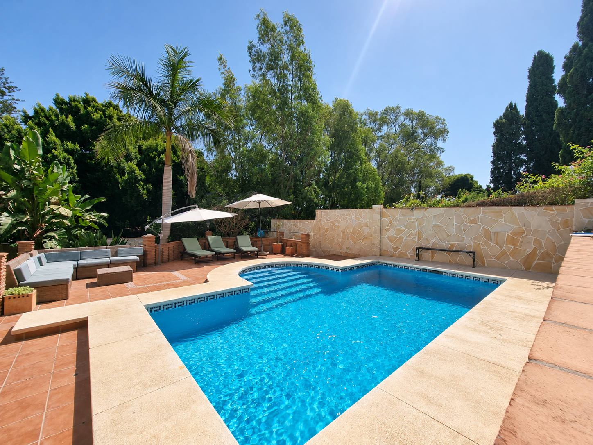
Spend a few weeks or a few months in Benajarafe. The Costa del Sol averages 325 days of sunshine a year. Start the day with a walk along the seafront, have lunch on the covered terrace and light the fireplace when the evening turns cool. Benajarafe is a small, welcoming village with all the everyday services you need.
The separate study has fibre internet for remote work and two desks, each with two monitors and an office chair. Just plug in your laptop.
Spend a day in Torre del Mar, the old town of Vélez-Málaga, Frigiliana or Nerja.
The main house
The main house has three bedrooms, one set up as an office. There is one bathroom on each floor and a third by the pool.
Come home to radiator heating and a fireplace after a walk by the sea. The house has solar panels.
Take a break outside by the pool.
Benajarafe beach is a one-minute walk from the house.
The separate study has fibre internet for remote work and two desks, each with two monitors and an office chair. Just plug in your laptop.
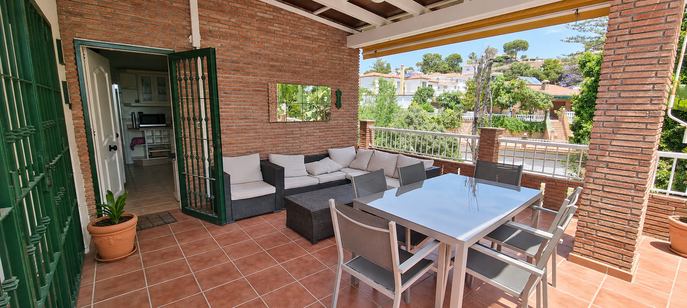
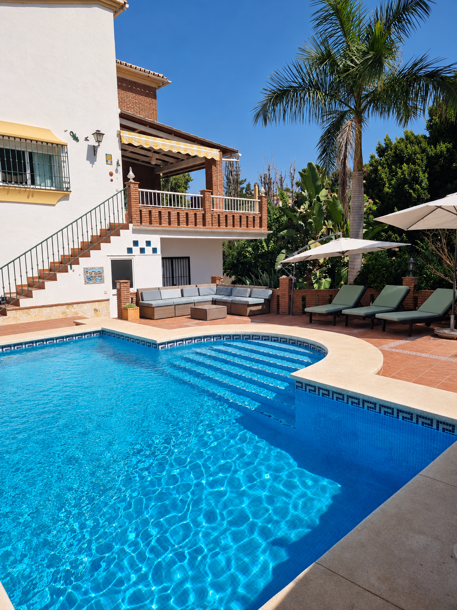
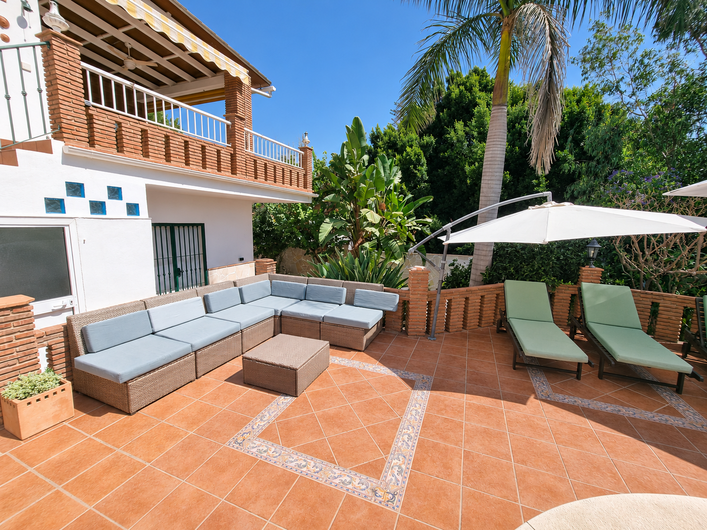
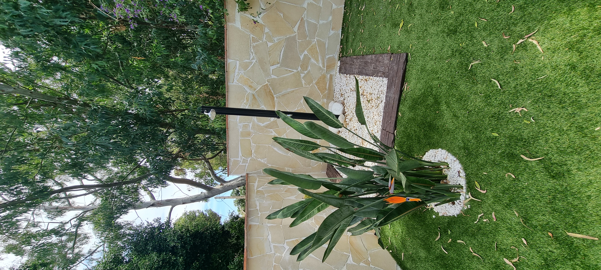
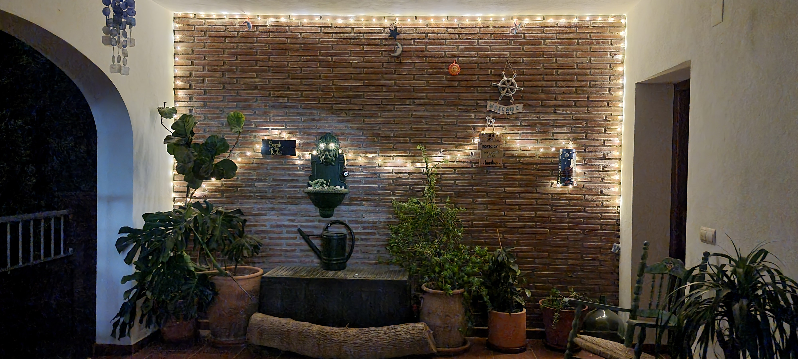
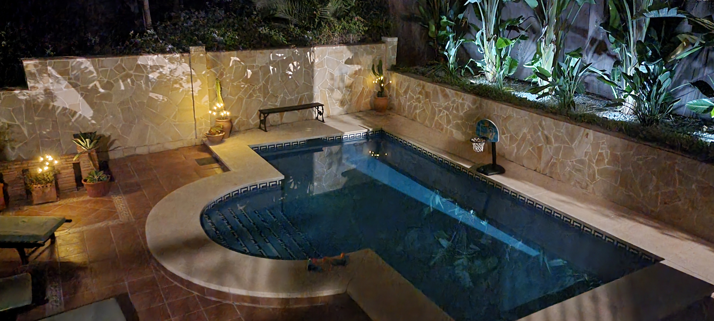
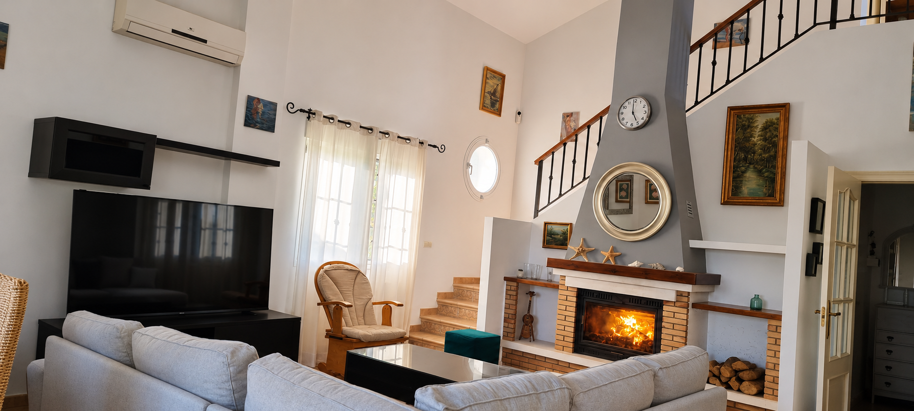
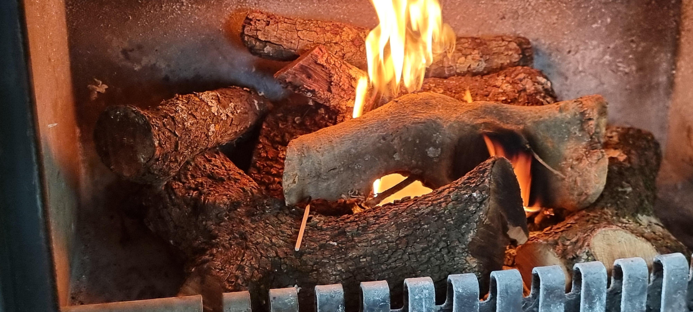
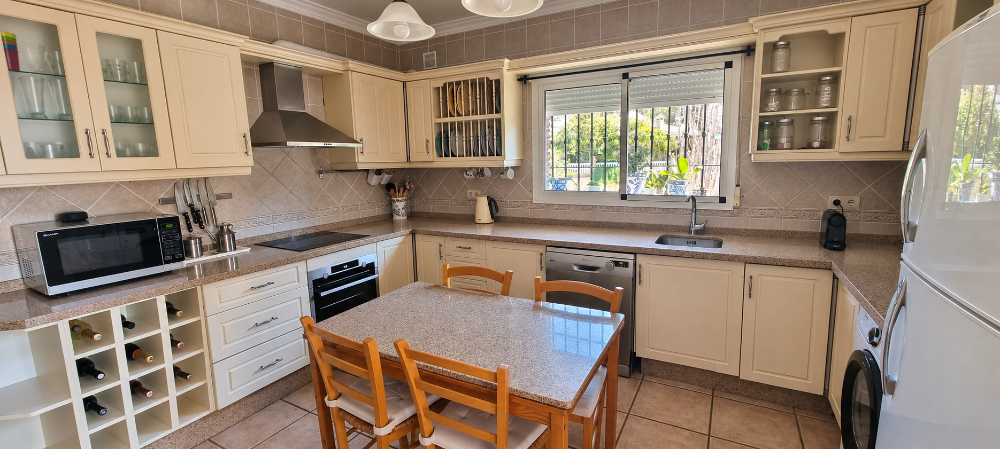
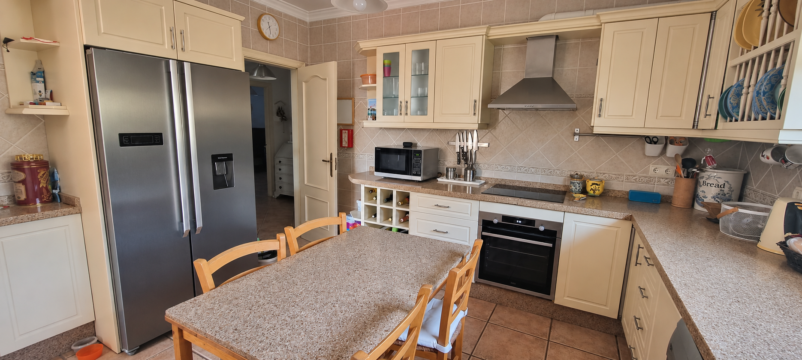
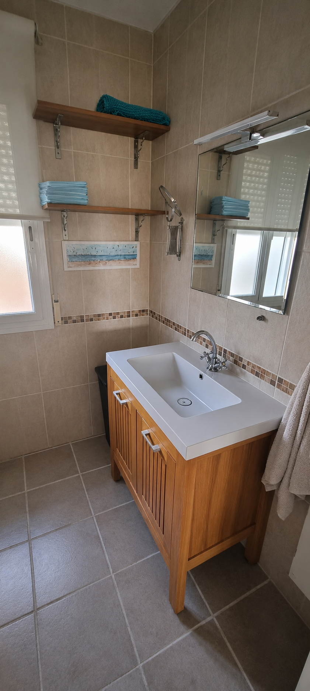
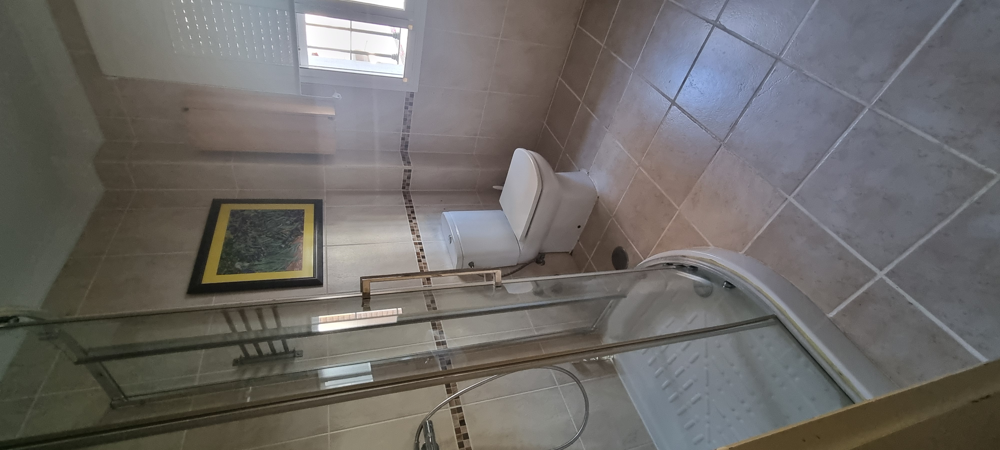
The village centre is less than 10 minutes away on foot along the coastal path. There you’ll find a pharmacy, a bakery, a fishmonger, a supermarket and restaurants.
Málaga city centre is about 20 minutes away by car.
Bicycles are available.
Open map